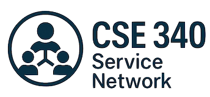

Find opportunities
Browse community organizations, service projects, and categories to find work that matches your interests.
CSE 340 course project
The Service Network brings volunteers and local organizations together. Explore opportunities, find projects by category, and discover ways to make a difference.

Browse community organizations, service projects, and categories to find work that matches your interests.
Create an account to manage your participation in projects and keep track of your service through a dashboard.
Administrators can manage organizations, projects, categories, and user accounts in one application.